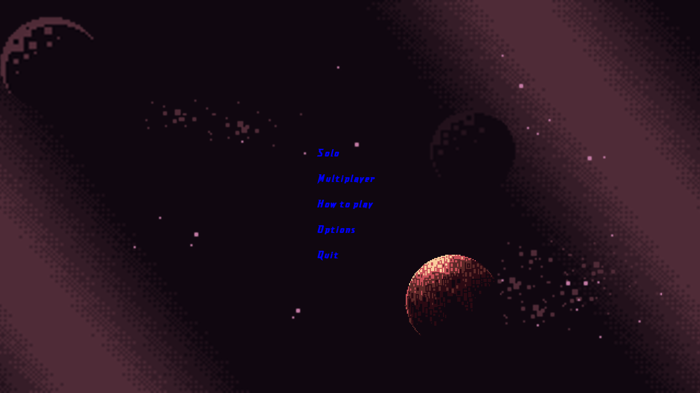
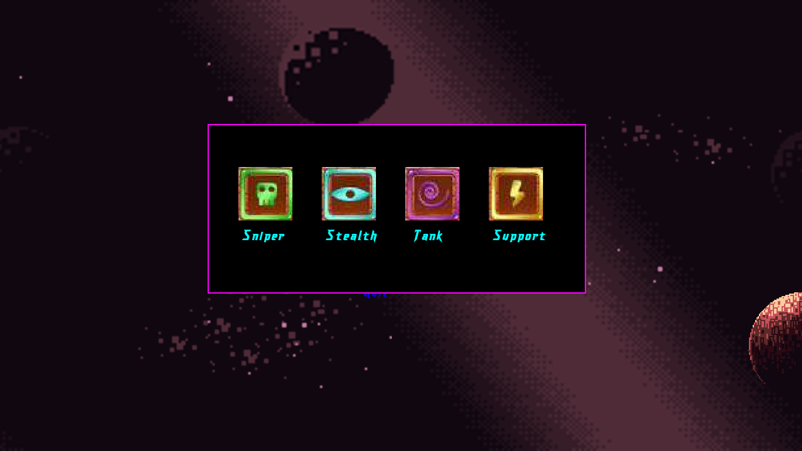
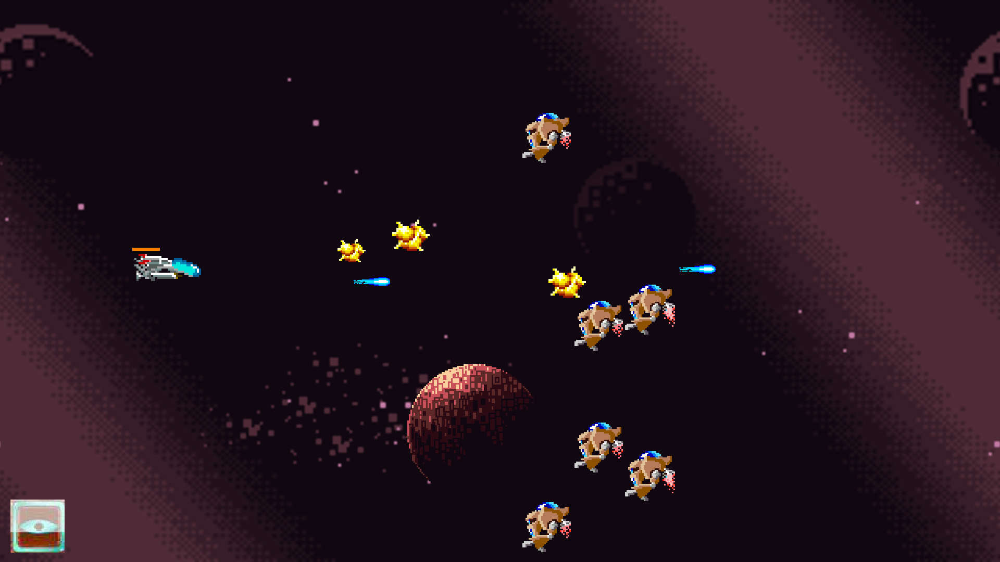
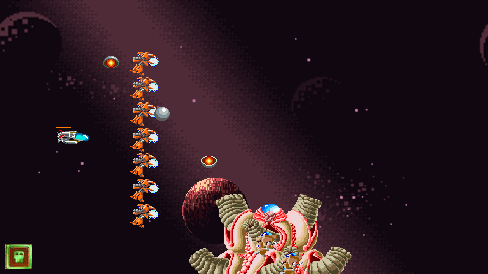

:rocket: What is R-Type ?
Our project R-Type is an ersatz of the famous R-Type arcade game, the purpose of the game is to control a ship and navigate throught the space while shooting and destroying ennemy ships.
However, the specifity of our game is that we implemented a multiplayer mode that allow you to play in coop from 2 to 4 players.
Our game also dispose of two difficulties, EASY and HARD as well as a WAVE EDITOR in order to modify monster spawning during the game (check SCRIPT.md on the documentation to have more informations about it).
In game preview
   
:star: Pre-compiled version for the impatient ones
You can look on the right side of our repository, in the Releases section in order to download a pre-compiled version depending on your operating system to play right away
:computer: Supported Platforms
Our project can be played on both Linux and Windows OS as well as MacOS and Raspberry Pi
:hammer: Building
To build our project you need to execute a simple script a the root of our repository.
It will take care of dowloading the dependencies as well as compiling the code.
And then, you can connect as many clients as you wish with this command:
:page_with_curl: Documentation
To read our project documentation, you need to execute a script in order to open a local web page.
./run_documentation.sh
You can also look here, to look out directly at our online documentation.
You can check our RFC that details the communication protocol between the server and the clients here.
:dancers: Authors
Henri Chauvet - Nathan Le Bigot - Matthis Lesur - Simon Le Fourn - Victor Harri-Chal